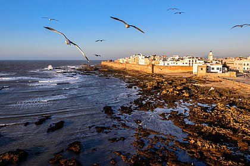

Asalamo Alaikom World.
THE WIND CITY
My beloved city!
In Essaouira, far from the urban bustle, delight and easy living are always on the agenda. Proud and imposing, the city proudly unveils its landscape of towering walls, historical fortifications and guns pointed towards the ocean. Listed as a World Heritage Site by Unesco, its medina, dotted with proud and untouched buildings travels through the ages and seems protected from the ravages of time.
Further away, in an old stately house built the nineteenth century, the Sidi Mohamed Ben Abdellah museum presents the cultural heritage of Essaouira. Essaouira, a renowned art city, is a harmonious watercolor, and offers, along its walls, frescoes of powerful colors.
its streets a range of art galleries, exhibit the works of local talent. Legendary setting of Orson Welles’ film «Othello», and a replica of Jerusalem in the movie «Kingdom of Heaven», it falls in step with the major film productions.
On the Atlantic coast, facing the medina, tourists are welcome in the new Mogador resort in a natural landscape. With a design that preserves the surrounding vegetation and topography of the site, Mogador resort is a shining example in terms of sustainable development.
It offers luxury hotels, lakes with facilities and two golf courses. Popular seaside resort, the waves of the trade wind city attract each year thousands of surfers from all backgrounds. Mogador resort On the Atlantic coast, facing